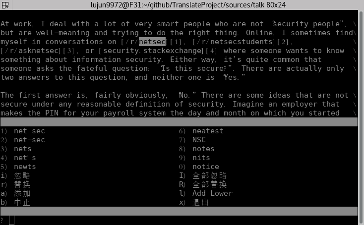

使用aspell检查英文拼写错误
安装aspell及其字典
aspell是一款拼写检查工具，它存在于几乎所有的Linux发行版的仓库中。在archlinux上可以通过下面命令来安装:
sudo pacman -S aspell aspell-en
其中， aspell 为aspell程序本身，而 aspell-en 为aspell用来检查的英文字典。
注意使用aspell一定要安装相应的字典,否则会提示
Error: No word lists can be found for the language "en_US"
事实上， aspell 除了英文外还支持其他多种语言：
pacman -Ss aspell
结果为:
extra/aspell 0.60.6.1-5 [已安装]
A spell checker designed to eventually replace Ispell
extra/aspell-de 20161207-1
German dictionary for aspell
extra/aspell-en 2017.08.24-1 [已安装]
English dictionary for aspell
extra/aspell-es 1.11-6
Spanish dictionary for aspell
extra/aspell-fr 0.50.3-7
French dictionary for aspell
extra/aspell-nl 0.50.2-3
Dutch dictionary for aspell
community/aspell-ca 2.3.0-2
Catalan dictionary for aspell
community/aspell-cs 20040614-8
Czech dictionary for aspell
community/aspell-el 0.08-2
Greek dictionary for aspell
community/aspell-hu 0.99.4.2-4
Hungarian spellcheck dictionary for aspell
community/aspell-it 2.2_20050523-5
Italian dictionary for aspell
community/aspell-pl 20171220-1
Polish dictionary for aspell
community/aspell-pt 20161001-1
Portuguese and Brazilian Portuguese dictionary for aspell
community/aspell-ru 0.99f7-6
Russian dictionary for aspell
community/aspell-sv 0.51-1
Swedish dictionary for aspell
community/aspell-uk 1.8.0-1
Ukrainian dictionary for aspell
可以看出，aspell还支持德语、法语、西班牙语、俄语等等很多语言，可惜的是没有中文
使用aspell检查文件中的错误拼写
使用aspell的 check 操作就能进行拼写检查了，像这样
aspell check file.txt # 或者 aspell -c file.txt
这里 file.txt 就是要被检查的文件了。
aspell默认会根据当前的语言环境(具体来说是根据LC_MESSAGES变量值)来决定使用哪个语言的字典来进行检查，因此若你的LANG设置成了 zh_CN.UTF-8,那么运行上面命令会得到下面的错误信息
错误：No word lists can be found for the language "zh_CN".
你可以通过修改LANG变量或者使用aspell的 --lang / -l 选项来解决：
LANG=C aspell -c file.txt # 或者 aspell --lang=en -c file.txt # 或者 aspell -l en -c file.txt
执行 check 操作后，Aspell会打开一个双窗口的编辑器：

上面那个窗口包含的是被检查的文件内容，其中光标停留在被认为是错误拼写的地方并把错误拼写的内容高亮起来了。
而下面的窗口列出了建议修改的单词(以数字标记)和可以进行的操作(以字母标记)。
按下单词旁边的数字，则表示用对应的单词替代错误内容;而按下操作旁边的字母，则表示执行相应的操作。
aspell的常用选项
aspell提供了大量的选项，其中最常用的选项大概有这么几个:
- --dont-backup
- 默认情况下，若你在aspell中修改了文件内容，aspell会以.bak为后缀保存一份原文件的副本。若你觉得没有必要则可以用这个参数指定不做备份
- --mode=
当用aspell来带格式的文本文件时，比如html/Tex，你肯定希望aspell不去检查那些关键字吧，这个时候就可以使用
--mode来指定aspell的过滤模式了。 aspell支持多种过滤模式，可以使用aspell dump modes来查看。aspell dump modes
结果为
ccpp mode for checking C++ comments and string literals html mode for checking HTML documents email mode for skipping quoted text in email messages comment mode to check any lines starting with a # perl mode for checking Perl comments and string literals url mode to skip URL like constructs (default mode) texinfo mode for checking Texinfo documents nroff mode for checking Nroff documents none mode to disable all filters tex mode for checking TeX/LaTeX documents sgml mode for checking generic SGML/XML documents
- --ignore-case / --dont-ignore-case
- 指定检查拼写时是否忽略大小写
- --igore=N / -W N
- 忽略单词长度少于N个字符的单词